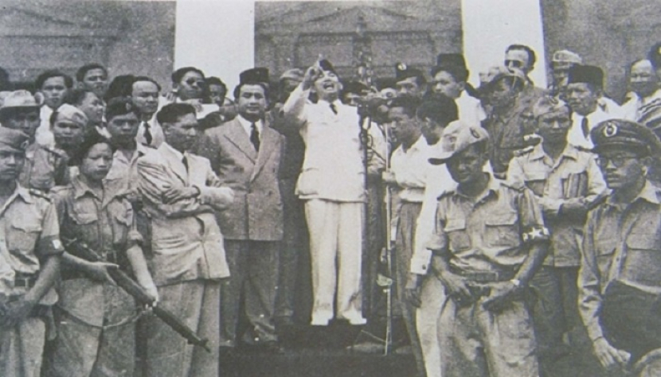

Sejarah

Sejarah Indonesia meliputi suatu rentang waktu yang sangat panjang yang dimulai sejak zaman prasejarah berdasarkan penemuan "Manusia Jawa" yang berusia 1,7 juta tahun yang lalu. Periode sejarah Indonesia dapat dibagi menjadi
lima era: Era Prakolonial, munculnya kerajaan-kerajaan Hindu-Buddha dan Islam di Jawa, Sumatra, dan Kalimantan yang terutama mengandalkan perdagangan; Era Kolonial, masuknya orang-orang Eropa (terutama Belanda, Portugis, dan
Spanyol) yang menginginkan rempah-rempah mengakibatkan penjajahan oleh Belanda selama sekitar 3,5 abad antara awal abad ke-17 hingga pertengahan abad ke-20; Era Kemerdekaan Awal, pasca-Proklamasi Kemerdekaan Indonesia (1945)
sampai jatuhnya Soekarno (1966); Era Orde Baru, 32 tahun masa pemerintahan Soeharto (1966–1998); serta Orde Reformasi yang berlangsung sampai sekarang.
Sumber: Wikipedia
Pembentukan

• Proklamasi kemerdekaan 17 Agustus 1945
• Konstitusi saat ini 18 Agustus 1945
• RIS dibentuk 27 Desember 1949
• Kembali ke NKRI 17 Agustus 1950
• Peristiwa Dekrit Presiden 5 Juli 1959
• Transisi ke Orde Baru 1965–1967
• Peristiwa Orde Baru 12 Maret 1967
• Tragedi Era Reformasi 21 Mei 1998
Wisata

Dari sekian banyak objek wisata di Indonesia favorit yang sering dikunjungi, beberapa diantaranya bahkan sudah terkenal hingga ke seluruh dunia lho! Mau tahu apa aja itu? Yuk, telusuri ragam tempat wisata Indonesia yang terkenal
di dunia berikut:
1. Pura Besakih
Pura Agung Besakih adalah pura terbesar dan termegah di Bali. Pulau ini terletak di Desa Besakih, Kecamatan Rendang, berada di lereng sebelah barat daya Gunung Agung, gunung tertinggi di Bali. Pura Agung Besakih memiliki gaya
arsitektur yang mengagumkan khas Bali dan berada di ketinggian 915 kaki di kaki Gunung Agung dengan memukau. Bangunan yang dibangun sejak abad ke-10 Masehi ini menjadi pusat kegiatan spiritual Hindu Dharma di Pulau Dewata.
Dengan segala fitur yang dimiliki Pura Besakih, tidak aneh jika situs ini ditetapkan sebagai Situs Warisan Budaya UNESCO sejak selamat dari erupsi Gunung Agung pada tahun 1963. Akses dari Kota Denpasar untuk mencapai tempat ini
berjarak sekitar 25 km ke arah utara dari Kota Semarapura, Kabupaten Klungkung. Perjalanan menuju Pura Besakih melewati panorama Bukit Jambul yang juga merupakan salah satu obyek dan daya tarik wisata Kabupaten Karangasem.
2. Kepulauan Derawan
Kepulauan Derawan adalah sebuah kepulauan yang berada di Kabupaten Berau, Kalimantan Timur. Di kepulauan ini terdapat sejumlah objek wisata bahari menawan, salah satunya Taman Bawah Laut yang diminati wisatawan mancanegara
terutama para penyelam kelas dunia. Saat pertama kali menginjakan kaki disini, jangan heran bila Toppers akan disambut dengan hamparan pasir putih yang mempesona. Warna airnya yang sangat jernih juga akan bikin kamu betah untuk
berlama-lama di kawasan ini. Panorama alam ini menjadi sajian liburan utama bagi wisatawan dalam berkunjung Faktor lain yang menjadi alasan mengapa kawasan ini wajib untuk dikunjungi, yaitu ekosistem bawah laut dan keasrian alam
sekitarnya benar-benar masih sangat terjaga. Wajar jika banyak wisatawan yang datang berbondong-bondong ke tempat ini, baik wisatawan lokal maupun wisatawan internasional. Pada tahun 2005 pemerintah telah mencoba mendaftarkan
kawasan wisata ini ke UNESCO sebagai salah satu situs warisan dunia, bahkan sampai mendapat julukan sebagai “Pristine Island”.
3. Taman Nasional Way Kambas (TNKW)
Taman Nasional Way Kambas (TNKW) Lampung ditetapkan sebagai kawasan Taman Warisan ASEAN (ASEAN Heritage Park) yang ke-36, pada tanggal 25 Juli 2016. Artinya, Taman Nasional Way Kambas ini menjadi Taman Warisan ASEAN ke-4 di
Indonesia. Terletak di ujung selatan Sumatera atau 110 km dari Bandar Lampung, TNKW merupakan salah satu Taman Nasional pertama dan tertua di Indonesia. Taman Nasional ini menempati 1.300 km persegi dari hutan dataran rendah
pantai sekitar Sungai Way Kambas di pantai timur Provinsi Lampung. TNWK dikenal dengan konservasi gajah, karena selain menjadi tempat perlindungan bagi Gajah Sumatera yang berjumlah sekitar 200, taman nasional ini juga dikenal
sebagai tempat latihan mereka. Way Kambas didirikan oleh pemerintah Belanda pada tahun 1937 sampai sekarang masih terjaga sebagai Taman Nasional. Selain konservasi gajah, di sini juga terdapat konservasi badak sumatera dan ada
fasilitas Rhino Sanctuary. Sayangnya untuk bisa dapat melihat Badak Sumatera ini, pengunjung harus punya izin khusus sebelumnya. Pengunjung atau wisatawan biasa tidak bisa melihat penangkaran alami badak sumatera ini.
4. Nusa Dua (Bali)
Pulau Seribu Dewa satu ini memang tidak perlu diragukan lagi terkait keindahan dan pesonanya dalam memikat para wisatawan dalam negeri maupun mancanegara. Di Bali, ada satu tempat wisata yang begitu cantik, yakni Nusa Dua. Objek
wisata pantai ini memiliki pasir putih yang lembut dan air laut yang berwarna biru jernih. Kamu akan dimanjakan dengan berbagai fasilitas saat berkunjung ke tempat satu ini. Mulai dari penginapan dan resort yang berkelas,
restoran, pusat perbelanjaan, hingga aktivitas berselancar di pantainya.
5. Pulau Komodo
Destinasi wisata Indonesia yang tersohor di mata dunia selanjutnya adalah Pulau Komodo. Pulau yang berlokasi di Kepulauan Nusa Tenggara Timur ini merupakan rumah bagi ratusan Komodo, hewan endemik yang hanya ada di Indonesia.
Selain bisa mengamati perilaku dan mengeksplorasi habitat dari hewan purba ini, Pulau Komodo juga menawarkan panorama alam yang menakjubkan. Salah satunya adalah pantai dengan pasir berwarna merah muda yang dikenal dengan nama
“Pink Beach“. Pantai seperti ini hanya terdapat tujuh di seluruh dunia sehingga menjadikannya sebagai salah satu tujuan wisata Indonesia yang mendunia.
Sumber : https://www.tokopedia.com/blog/objek-wisata-indonesia-yang-terkenal-di-dunia-tvl/